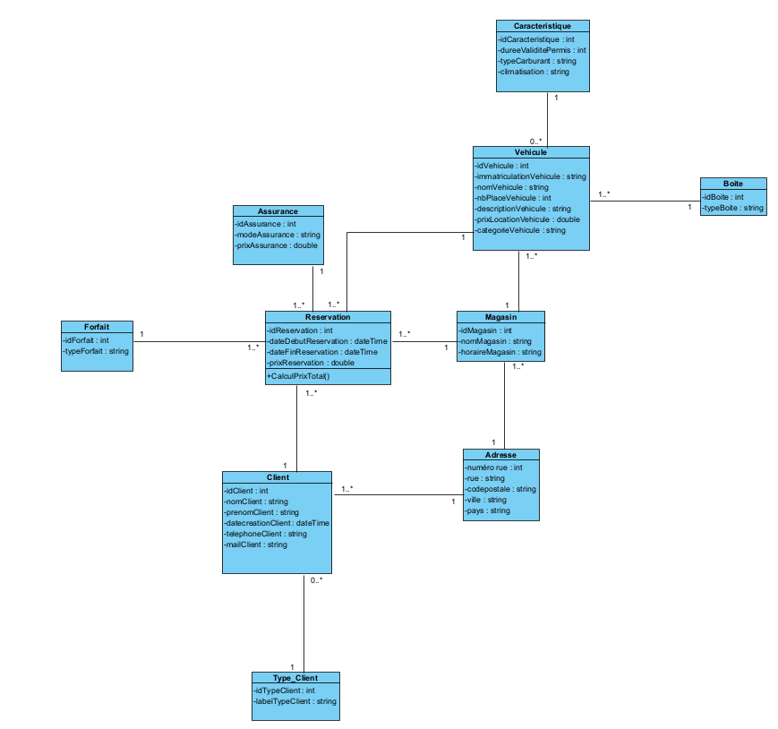
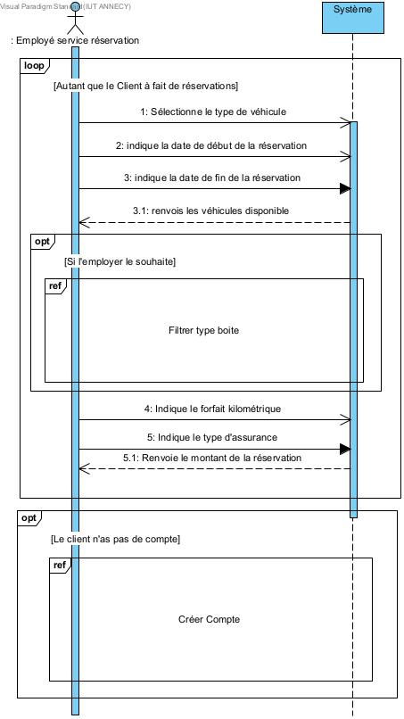
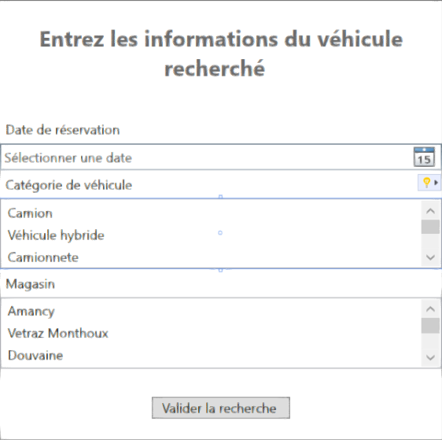
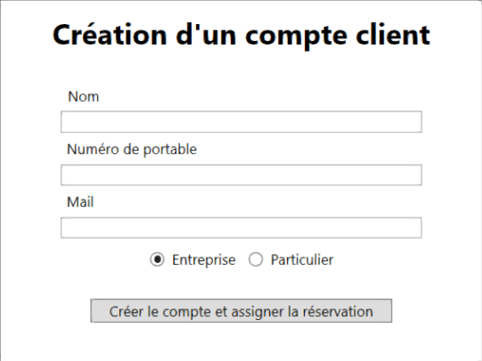
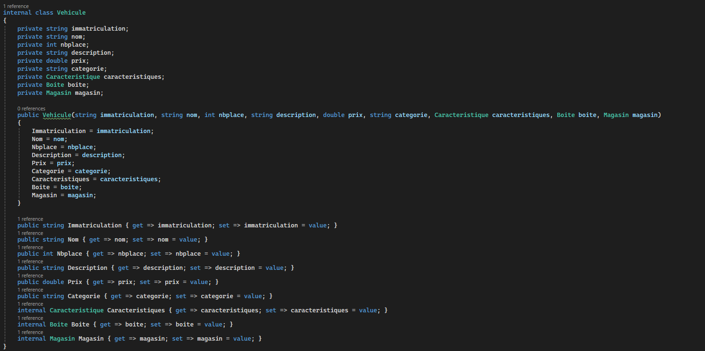

Durant ma 1ère année de BUT Informatique, j'ai eu l'opportunité de mettre en place mon apprentissage dans un groupe de 3 étudiants dans la conception et le développement d'une application de réservation de véhicule pour l'enseigne française de grande distribution : « Intermarché »

Nous avons commencé ce projet par une approche de conception pour orienter notre programmation future. Nous avons utilisé Visual Paradigme pour la création d'un diagramme de classe pour se représenter les objets qui seront manipulés dans le code, ainsi que des diagrammes de séquences pour représenter les actions du client et les réponses du système.
Ces diagrammes nous ont permis de nous projeter dans la programmation dans laquelle nous aurons 10 classes pour manipuler nos objets, mais également mettre en lumière les interfaces utilisateurs avec les réponses du code


Avant de passer au développement, nous avons réalisé des maquettes pour l'interface et les diiférents fenêtres visibles par l'utilisateur. Nous avons mis au point cette maquette en WPF dans Visual Studio.
La maquette suit toutes les étapes de la réservation d'un véhicule. L'application sera utilisée par des salariés de l'entreprise donc la réservation passe tout d'abord par une authentification, elle passe par une recherche de véhicule dans les différentes agences, la disponibilité d'un véhicule, ajout des options, et l'affectation à un client en passant par la création du client si il n'existe pas dans la base de données du logiciel.

À partir de la conception et des maquettes, nous avons commencé le développement. Pour la programmation nous avons utilisé WPF C#. Nous avons créé les classes des objets qui ont été décrits par le diagramme de classe. Nous avons codé les fonctions du code et nous les avons liées avec l'interface de l'application. Pour chaque fonction des tests manuels ont été réalisé afin de validé leur fonctionnement.
